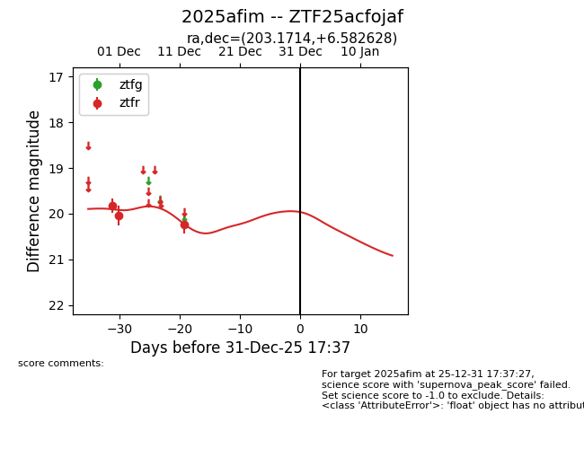
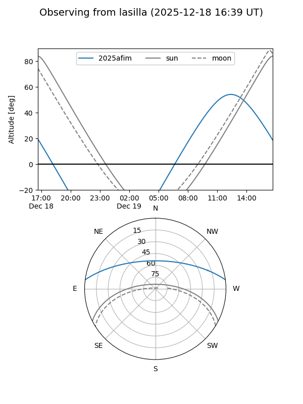
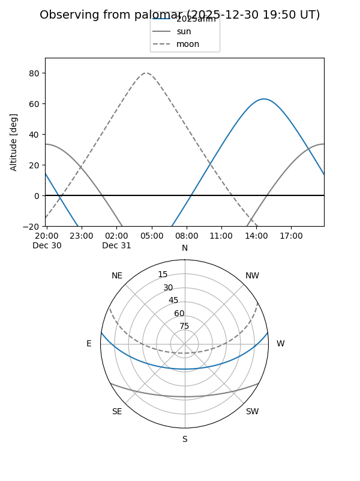
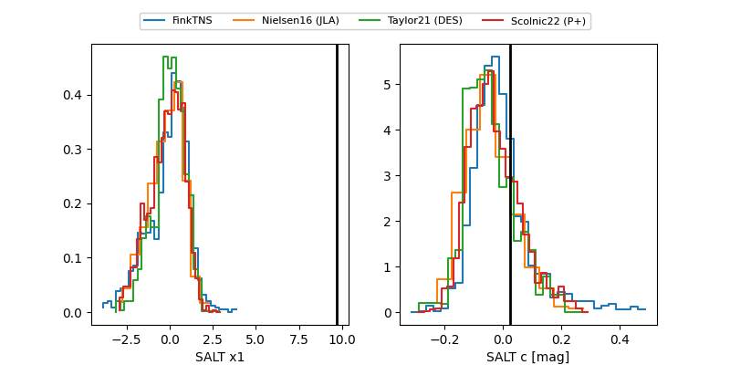

2025afim
Target 2025afim at 2025-12-18 11:18
Aliases and brokers:
FINK: fink-portal.org/ZTF25acfojaf
Lasair: lasair-ztf.lsst.ac.uk/objects/ZTF25acfojaf
ALeRCE: alerce.online/object/ZTF25acfojaf
TNS: wis-tns.org/object/2025afim
YSE: ziggy.ucolick.org/yse/transient_detail/2025afim
alt names
ZTF25acfojaf (ztf,fink_ztf)
2025afim (tns,yse)
Coordinates:
equatorial (ra, dec) = 203.1714,+6.58263
equatorial (HMS+DMS) = 13:32:41.14,+06:34:57.46
galactic (l, b) = (330.2929,+67.23689)
Photometry
last ztfr=20.24
3 ztfr detections
Lightcurve

Visibility


Additional plots
